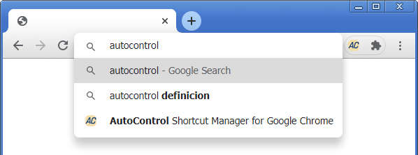
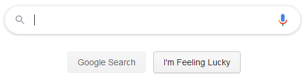
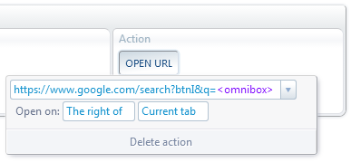
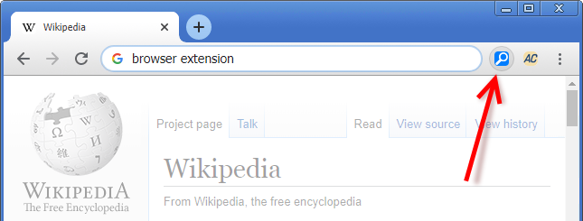
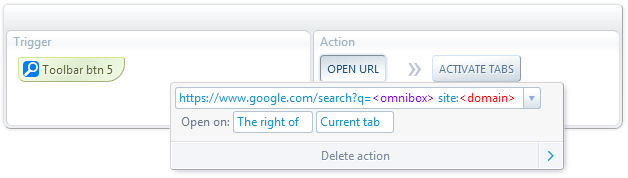
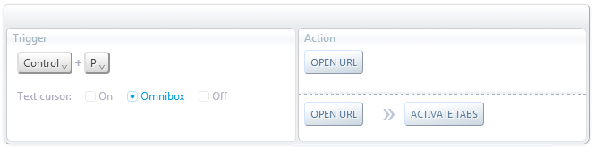
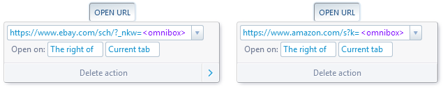

Address bar shortcuts for Google Chrome

AutoControl allows to define shortcuts that work specifically when you are typing text in the address bar, also known as the omnibox.
You can configure these shortcuts to do any action with the entered text, such as searching it in a given search engine, opening it as a URL,
manipulate the text in a script, send it to an external program, etc. The possibilities are endless.
Let's see a few examples.
"I'm Feeling Lucky" from the omnibox

When you click the "I'm Feeling Lucky" button in Google's home page, you are taken directly to the first search result, bypassing the results page.
This is quite convenient when you know what will be the first result for a search term.
For example, searching for the term "Wikipedia" will undoubtedly give us the Wikipedia home page as the first result.
Google provides the following URL to achieve the same without clicking the "I'm Feeling Lucky" button.
https://www.google.com/search?btnI&q=SEARCH TERMS

We can use this URL in AutoControl's Open URL action, as shown on the right.
The <omnibox> text in purple is a special placeholder
that will insert the content of the omnibox when the action is executed.
Now, we have to assign a shortcut to the action. Let's use Shift+Enter.
In order for the shortcut to work only when the omnibox is focused, we can add the Text cursor condition, as shown on the left.
That's it. Now whenever we type text in the omnibox and press Shift+Enter, we'll go straight to the first search result.
Website search button
In this example, we'll add a toolbar button right next to the omnibox that allows us to perform a Google search in the current website only.

The URL for searching in a specific website domain has the following form:
https://www.google.com/search?q=SEARCH TERMS site:DOMAIN
As in the previous example, we'll use this URL in the Open URL action, but this time with two placeholders.

The <omnibox> placeholder gives the text that was typed in the omnibox and the <domain>
placeholder gives the domain of the target tab (which by default is the current tab, but you can choose other tabs in the Apply to select box).
Go to Custom toolbar buttons to see how to add buttons next to the omnibox.
Multi-engine search
If you frequently search for something in several websites, such as looking for the same product in multiple shopping sites,
you can create an address bar shortcut for doing that automatically.
As an example, let's use Ctrl+P to submit the text typed in the omnibox to eBay and Amazon simultaneously.
The search URLs for those sites are:
https://www.ebay.com/sch/?_nkw=SEARCH TERMS
https://www.amazon.com/s?k=SEARCH TERMS
We'll use the Open URL action as in the previous examples. But since we want to open 2 URLs this time,
we have to use that action twice, as follows:

The settings for each action are analogous to the previous examples.
We use the <omnibox> placeholder to insert the omnibox text into the URLs.

Also, notice how the Activate Tabs action is chained to the second Open URL.
This is to activate the tab being opened by that action.
It's important in this particular example to activate the last tab being opened and not the first one.
This is because activating a tab causes the text in the omnibox to change (since there's only one omnibox per window).
If we activated the first tab being opened, the omnibox text would change before the second Open URL
action has a chance to read the text that was just typed into it.
So the order of execution is important in this case. Actions execute from top to bottom and from left to right.
Go to AutoControl Actions to learn more about this.
 Forum
Install now from theChrome Web Store
Forum
Install now from theChrome Web Store